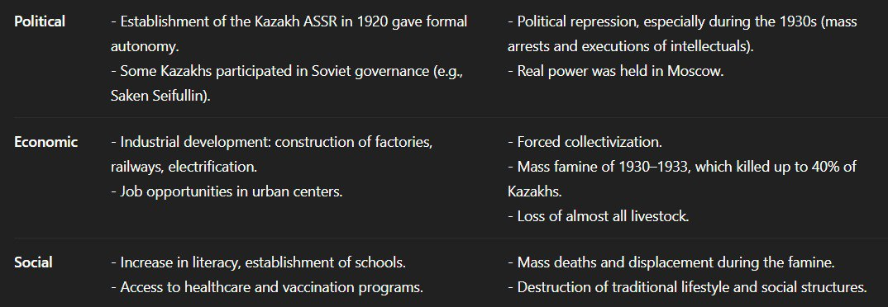
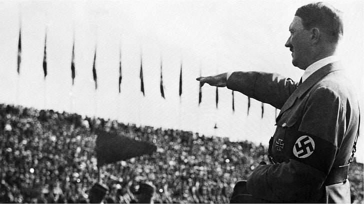
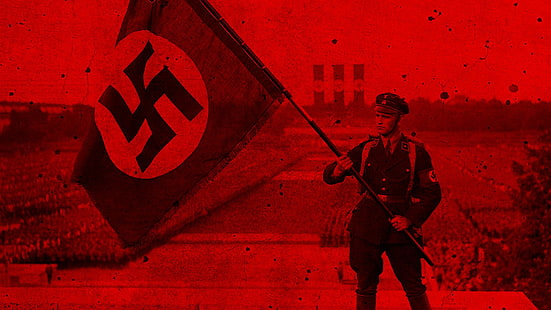

The Russian colonization deeply transformed the Kazakh socio-political landscape. Traditional tribal and khanate governance structures were abolished, replaced with a rigid administrative hierarchy controlled by imperial Russia. Local elites lost their autonomous powers, and Russian-appointed officials took over all legislative and judicial functions.
Colonization also brought the introduction of private land ownership, which conflicted with nomadic traditions. The influx of settlers disrupted traditional land use and caused displacement. Education and religion were also targeted: Islamic schools were restricted, and Russian-language schools promoted assimilation. In the long term, these shifts caused a growing sense of national identity and laid the foundation for 20th-century nationalist movements.
In summary, colonization eroded traditional structures but also catalyzed the emergence of modern Kazakh political consciousness and resistance.
The colonization of Kazakhstan by the Russian Empire was a multi-faceted process that spanned nearly two centuries. Initially masked as protection and alliance, Russia's involvement gradually evolved into total political and territorial domination. The process was not only about acquiring land, but also about reshaping Kazakh society in the Russian imperial image.
In the 18th century, with threats from the Jungars and other regional powers, Kazakh khans sought Russian assistance. However, this request for protection led to increased Russian influence, culminating in the systematic dismantling of Kazakh political independence. By the 19th century, traditional authority had been replaced by imperial bureaucracy.
Reforms such as those in 1867–1868 formalized administrative control. Kazakh lands were reclassified and redistributed, often to Russian settlers, stripping nomads of their ancestral pastures. This led to widespread discontent, culminating in events like the 1916 uprising, a massive rebellion against land seizures and conscription.
Colonization affected every aspect of life: language, religion, governance, and economy. While infrastructure and education improved in some areas, these developments often served the needs of colonizers more than the local population. The long-term effects included loss of identity, economic hardship, and cultural suppression—but also a rise in nationalist movements and eventual independence struggles in the 20th century.
Understanding this history is crucial to grasp modern Kazakhstan’s socio-political dynamics and its ongoing journey of cultural restoration and national pride.
 